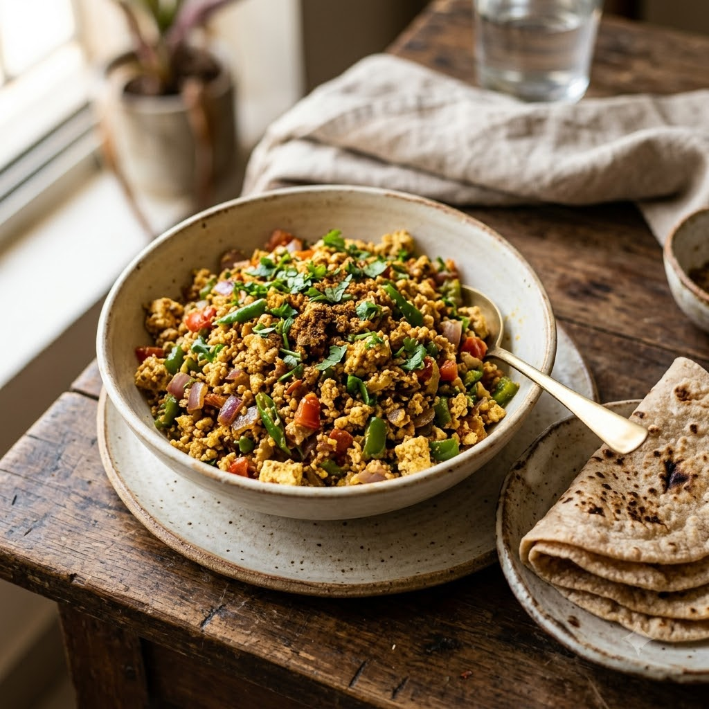

Paneer Bhurji (Dry, Standalone)

Paneer Bhurji (Dry, Standalone)
Chef Magic – Sauté Auto 15 min — Serves 4
Gluten-Free • Vegetarian • High-Protein • Everyday
Ingredients
- 300g paneer, crumbled
- 1 onion, finely chopped
- 1 tomato, finely chopped
- 1 capsicum, finely chopped
- 1 green chilli (hari mirch), chopped
- 1/2 tsp cumin seeds (jeera)
- 1/4 tsp turmeric (haldi)
- 1/2 tsp red chilli powder (lal mirch powder)
- 1/4 tsp garam masala
- 1 tbsp oil or butter
- Salt to taste
- Chopped coriander (dhania) to garnish
Method
1Add oil and cumin seeds to the jar; select Sauté (Speed 2–4, ~130–160°C) until they splutter.
2Add onion and green chilli; cook for 4 minutes until soft.
3Add capsicum and tomato; sauté 4 minutes until softened.
4Stir in turmeric, chilli powder and salt, then fold in the crumbled paneer; sauté gently for 5 minutes until just heated through.
5Sprinkle with garam masala and garnish with coriander before serving — with toast, in wraps, or alongside rotis.
Tip: Add the paneer last and keep the heat gentle throughout — this dish is best soft and crumbly, not fried firm.